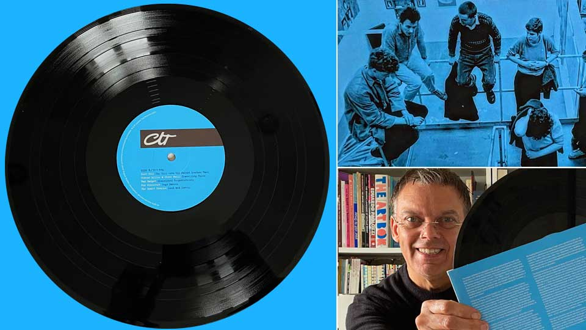
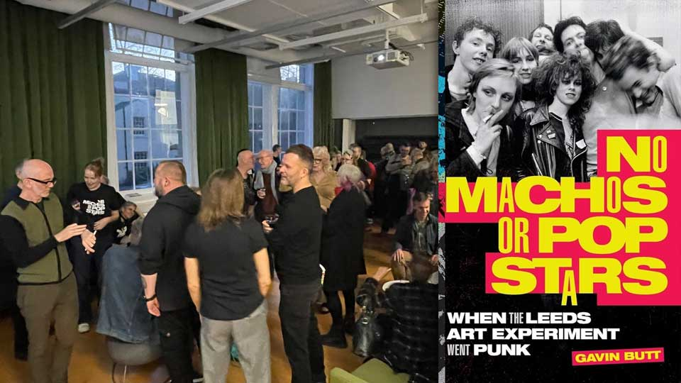
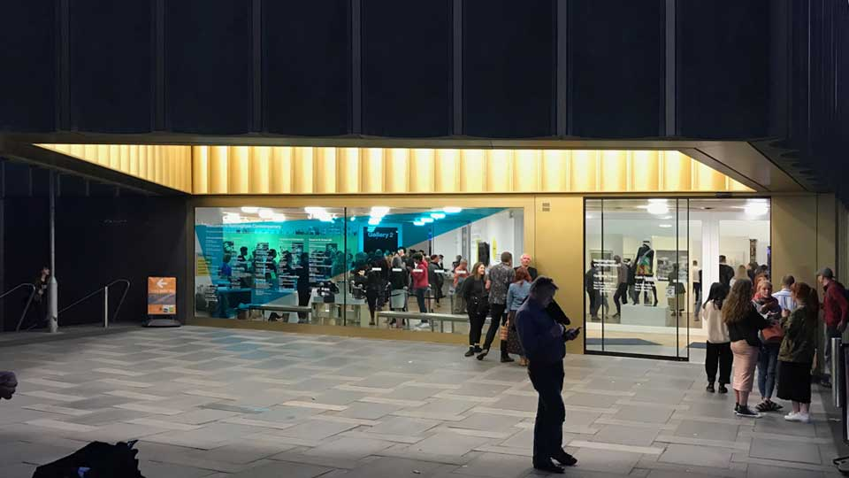
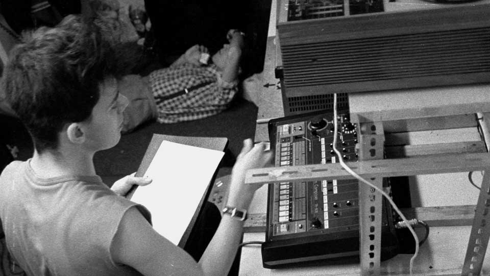
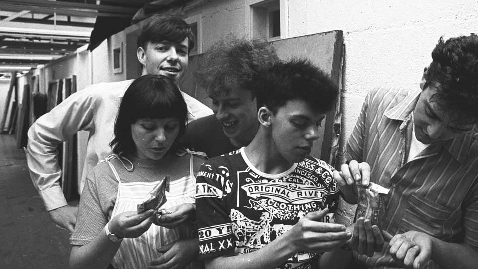
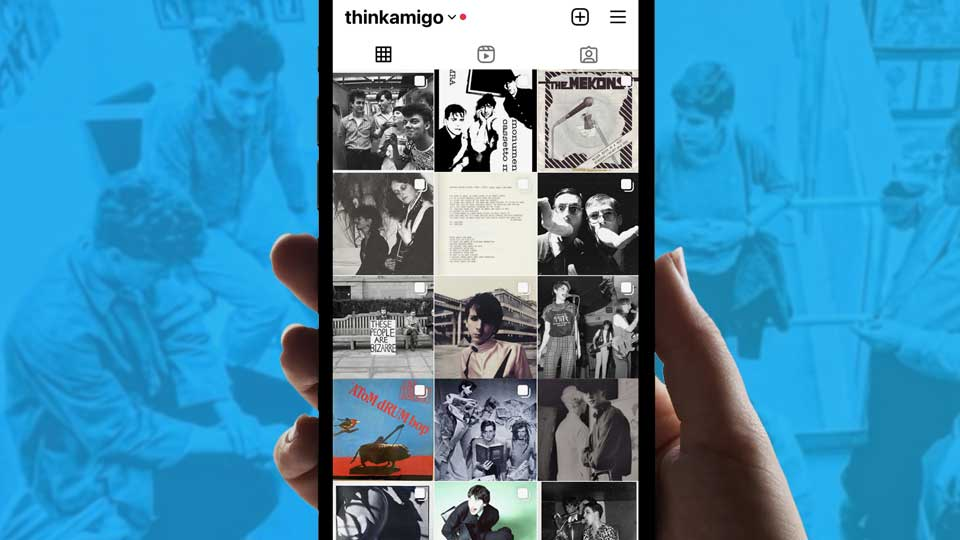
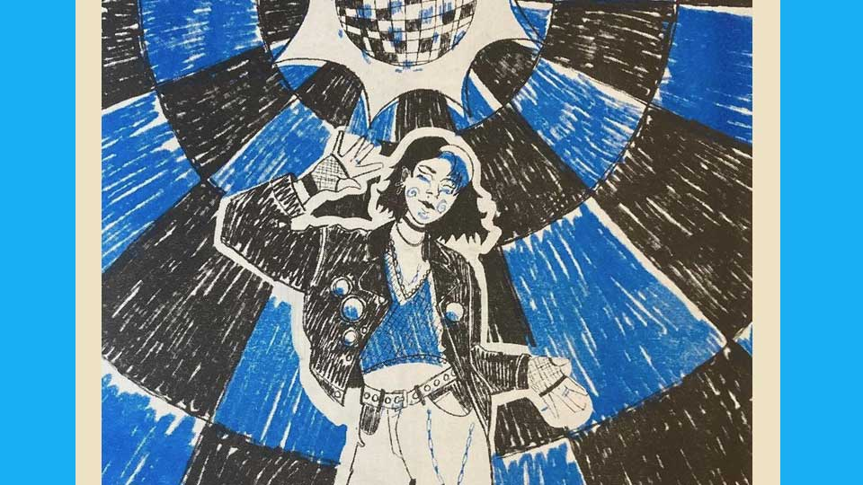

Leeds, loud and lonely
Feature - Paul Fillingham, November 2023
Having spent a significant amount of time working on digital research and design projects in Leeds - the city where I did my fine arts training - I was delighted when I discovered that a double album was going to be released, featuring a track originally composed and recorded in this city by my art school band The Smart Cookies, way back in 1983.
The brainchild of Gavin Butt, Professor of Fine Art at Northumbria University, the album 'The Art School Dance Goes On: Leeds Post-Punk 1977-84' - was released in August 2023 on the now fashionable heritage media format of vinyl by Caroline True Records. The album is a long awaited sequel to Gavin's 2022 print publication 'No Pop Stars or Machos' - a research study into the state-funded multidisciplinary art practice which existed at Leeds Polytechnic in the 1970s and early 80s.

The book 'No Pop Stars or Machos' was preceded by 'Still Undead: Popular Culture in Britain Beyond the Bauhaus' - an exhibition held at Nottingham Contemporary at the end of 2019. The exhibition, in my hometown, held in 'the Tate Gallery of Robin Hood country' was something of a triumph, exploring how the ideas and teaching of the Bauhaus school of art (1913-1933) lived on in Britain, via pop culture and art schools.

I donated a number of photographs to the exhibition including memorabilia relating to the band Soft Cell and interior shots of Leeds Poly Fine Art Sound Studio.
'Still Undead: Popular Culture in Britain Beyond the Bauhaus' cited Leeds Poly Fine Art as one of the most influential art schools in Europe - its avant-garde experiments in sound and performance grabbing tabloid headlines and controversy on numerous occasions.
There seems to have been a few retrospectives involving my fine art contemporaries recently. In 2021, the post-punk collage work of Tony Baker was celebrated at an exhibition at Dean Clough, Halifax. Tony's inspirational collage work resurfaced during the pandemic as he posted his popular 'one-minute lectures' on Instagram, right up to his untimely death in October 2021. Throughout these retrospectives, Leeds Poly Fine Art students, myself included, have mentioned the influence of lecturer Jeff Nuttall - himself the subject of an exhibition at The John Rylands Library in Manchester in 2017.
Earlier this year, Nuttall's biography 'Anything But Dull' was also published, which chronicles the rise and fall of a deeply committed creative polymath. A veteran of the Fluxus Art Movement whose members included Yoko Ono, Nuttall was the author of 'Bomb Culture' a seminal study of cold war counterculture. Jeff, who died in 2004, sincerely believed that the power of imagination could bring about social change.
In my experience, Jeff could be difficult, misogynistic, and outspoken, but I admired him. He embodied the ethos of Leeds Fine Art and truly believed in the experimentation going on in the studio, including the activities in the performance area and sound studio - perhaps with the exception of art students' attempts at playing the saxophone - he hated that - it was an affront to his love of jazz, and the fact that he could play a mean trumpet!
A few students from my cohort were able to transcend the holy trinity of academia, teaching, and art failure - making inroads (unbelievably) as mainstream rock and pop artists. Bands like the Mekons, Gang of Four, Soft Cell, and Scritti Politti, were lucky enough to be granted that all-important boost from BBC Radio One DJ John Peel, which helped put them on the path to commercial success. My own pop experiments between 1980 - 1983 failed to make that transition, but nevertheless formed part of the culture at Leeds and enjoyed some life beyond the Poly when I returned to the east midlands.

As we progressed through Leeds and beyond, the practice of creating pop songs became augmented by the use of digital technology - an interest that would ultimately lead me back to visual design via video production, early adoption of the BBC micro and the Apple Macintosh computers. Pursuing a career in digital design meant that music fell by the wayside for a while, but never quite went away.

Back in Nottingham in the late 80s, I rekindled my friendship with Chris - a brilliant guitarist and always central to the band - we started making home recordings with a Fostex 4 track cassette recorder, digital samplers and MIDI synthesisers under the name The Boys Beyond Midnight. Later, we recruited our friends Dave Halls (drums) and Adam Fisher (keyboards) and began performing as Ramba Zamba - a live band augmented with video screens and MIDI sequencers, which was essentially a development of The Smart Cookies sound.
Ramba Zamba (named after a funfair ride at Nottingham's annual Goose Fair) folded in 1991. It wasn't until the mid-noughties that Chris and I got together again to re-record a number of Smart Cookies songs, on this occasion leveraging the power of LogicPro software running on a MacBook, and releasing a Smart Cookies EP on Apple iTunes.
Around this time, I was interviewed by Leeds Alumni Officer Della Vallance for an article entitled 'Art & Music: Making it' giving the first indication that Leeds Fine Art had been unique in its approach to creative experimentation. Geoff Teesdale was still head of the art school at the time of the interview, so I arranged to visit him for the first time in over twenty years after leaving the art course. Geoff was another champion for creative expression. In the 1982 BBC TV documentary 'A Town Like New Orleans' he delivered the line 'any viable activity, cultural comment, any cultural concern can be considered as art' - effectively, giving students a green light to do anything - an attitude we both challenged in subsequent years.
Meeting Geoff in 2006 was very emotional as I recall. When I mentioned the sense of loneliness and alienation I experienced at Leeds, Geoff replied 'No, you've always been one of us, and always will be one of us'. He really meant it, and the exchange was so heartwarming, and had us welling up in tears. Creative showcases like 'The Art School Dance Goes On: Leeds Post-Punk 1977-84' also celebrate the value of those heady days, so naturally, when August 2023 came around, I was delighted to receive a copy of the double album and see it promoted in outlets like Jumbo Records in Leeds - who back in the day had been brave enough to promote our crude mix tapes in their store.

After a succession of media formats, from Compact Discs to MP3 downloads, and now internet streaming, I'd completely forgotten about the joy of handling vinyl records - breaking open the shrink wrap, sliding out the heavy vinyl discs and pouring over the sleeve notes and photographs. Gavin, with the help of Caroline True Records did a great promotional campaign around the release, publishing images and biographies of all the bands involved, including the aforementioned Mekons, Gang of Four, Soft Cell, and Scritti Politti. The accounts really captured the atmosphere, or to borrow a German phrase that I learned in Art History - the 'stimmung' of the place.
Smart Cookies biography by Gavin Butt
The Smart Cookies were sometimes a five, other times a three-piece outfit comprising art students Paul Fillingham, Russell Fisher, Chris Richards, Bob Smith and non-student member Rose Macpherson.
The band came out of early eighties recording sessions in the Leeds Polytechnic sound studio and, as such, were one of the few music bands to be formed by students at Leeds art colleges in the early 1980s after the post-punk explosion of art school groups.
The sound studio was a modest resource, both in scale and quality of equipment. It comprised mainly Revox, Ampere and Tandberg reel-to-reel tape recorders, a Vortexion mixer, a turntable, a reverb unit, and a small collection of microphones, amplifiers and speakers.
Its overriding raison d'etre was to create surreal or unnerving juxtapositions of sounds and sound sources for performance and installation art, to revel in sonic edges and absurdist sound continua, rather than birth seamlessly produced, commercial-ready rock and pop industry outputs.
That didn't stop bands like Soft Cell, Household Name and Smart Cookies using it for experiments more fulsomely in the direction of pop music. The Smart Cookies were perhaps the most unashamed lovers of pop in the Leeds art school milieu, beginning as a synth-oriented outfit and then, as the eighties wore on, embracing the guitar-based sounds of bands like Orange Juice, The Smiths and Aztec Camera.
'The Art School Dance Goes On' includes the previously unreleased track 'Loud and Lonely' which was recorded in 1983, the year the band made attempts to get a record deal. Fillingham recalls: "One reviewer wrote that 'Loud and Lonely' is Beatleish and beautiful' and urged record producers to snap us up. But in striving for commercial appeal, it felt as if our essential spark had somehow become extinguished." The band ceased activities at the end of that year.
The art school dance goes on
Earlier this week, Gavin gave a presentation to current students in Leeds about the creative experiments that came before, including our exploits in pop. The lecture sold out and I was unable to attend, however, I was intrigued to learn that students had produced a fanzine, comprising of visual interpretations of 'The Art School Dance Goes On'.

Writing this piece coincides with the release of The Beatles final recording 'Now and Then'. Like 'Loud and Lonely' the song seems anachronistic and perhaps represents a form of 'closure' for the surviving members of the band? The basic premise of the record is the fact that the original foursome are reunited through the enabling technology of Artificial Intelligence (AI) - recreating the essence of the deceased members of the band John Lennon and George Harrison. In spite of an acrimonious break-up in 1969, The Beatles impressive back-catalogue bears testimony to the togetherness and camaraderie they once enjoyed when they were young.
I'm reminded of an urban legend concerning The Beatles' formative years, as they laid the groundwork for their success in Hamburg's red light district. During their gruelling performances, the owner of the Kaiserkeller would shout "Mach schau... Mach schau," meaning, "make a show" - encouraging the band to maximise their stage presence. The Beatles became so proficient at stomping around on stage, that on one occasion the whole thing collapsed under their feet. For us in the 1980s, 'Loud and Lonely' became a self fulfilling prophecy, perhaps because we didn't "Mach schau" enough?
Loud and proud
I'm fortunate that my own journey, though characterised by unexpected twists and turns, is still driven by the creative impulse I felt during my time at Leeds Fine Art. And I would advise the current generation of art students to remember the maxim of The Beatles promoter Bruno Koschmider to "Mach schau... Mach schau." at every opportunity - that way, they might avoid being 'Loud and Lonely' and perhaps become 'Loud and Proud' instead?